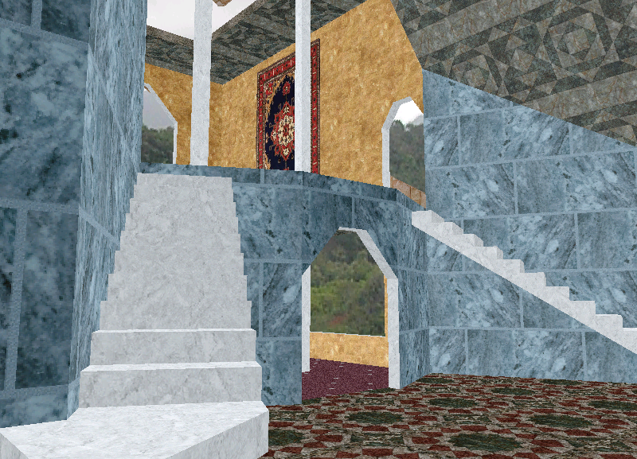

Coded 3D Rasterizers for Fun
- Personal projects in High School and college.
- Self-taught C programming with the goal of writing a 3D engine.
- Self-taught linear algebra.
- Independently defined my own mathematical model for 3D projection.
- My younger self considered it "cheating" to "look up the answer".
- Developed algorithms for watertight rasterization, Z-sort, potential visibility, etc.
- Developed (with some help from Michael Abrash via online articles) texture mapping algorithms in assembly.
- Wrote 3D modeling software to create content for the engine.
Results

Luxurious marble staircases, persian wall rugs, and "artistically coordinated" interior finishes.
No game engine is nerdy enough without snakes, skulls, and dragons!
Sooo 3D, you can even look down!
But never 3D enough until I added STEREO VISION!!!

2003 -- Worked a summer internship at HP and ported my 3D engine to a digital camera.
HP finalized a patent for this work in 2006.
2009 -- My engine finally saw its moment of fame as a moderately successful puzzle game for early iOS. (~35,000 downloads)